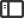

<!doctype html>
<html lang="ko">
<head>
<meta charset="utf-8">
<meta name="viewport" content="width=device-width, initial-scale=1">
<link rel="icon" href="favicon.ico?v=5" sizes="any"><link rel="icon" type="image/svg+xml" href="assets/common/favicon.svg?v=5"><link rel="apple-touch-icon" href="assets/common/apple-touch-icon.png?v=4">
<title>AI Agent · OmicsPharm</title>
<!-- AI Agent (beta) — 마이페이지 메뉴 맨 아래에서 들어오는 별도 화면. Figma 1665:7158 (Stand_alone_home, BioEOS 디자인 시스템 · 오믹스팜 디자인 시스템과 별개라 그대로 구현)
     2026-10-21 내부 미팅: 로그인 회원용 AI 에이전트. 오른쪽 아래 CS 챗봇·[문의하기]와는 별개
     아이콘·로고는 Figma에서 내보낸 파일(assets/ai). 로고는 OmicsPharm으로 교체(1665:7162), 왼쪽 메뉴 접기 = Figma 1700:18104 (2026-10-23)
     프로토타입: 실제 답변 없음. 보내면 예시 답변, 대화는 이 화면에서만 유지 (새로고침하면 처음 상태) -->
<link rel="stylesheet" href="https://cdn.jsdelivr.net/gh/orioncactus/pretendard@v1.3.9/dist/web/static/pretendard.min.css">
<script src="assets/common/site.js?v=20261117a"></script>
<script src="assets/common/consult.js?v=20261106b"></script>
<script src="assets/common/mypage.js?v=20261120b"></script>
<style>
  :root { --p30:#1db3a4; --p40:#0ac4b2; --g0:#000; --g20:#333; --g30:#4d4d4d; --g40:#666; --g50:#808080; --g60:#999; --g90:#e5e5e5; --g95:#f2f2f2; --glass:0 4px 10px rgba(55,55,55,.05); }
  * { box-sizing:border-box; margin:0; padding:0; }
  html, body { height:100%; }
  body { font-family:"Pretendard","Apple SD Gothic Neo",system-ui,sans-serif; font-weight:600; color:var(--g20); -webkit-font-smoothing:antialiased; background:#fff; }
  button { font:inherit; color:inherit; background:none; border:0; cursor:pointer; }
  a { color:inherit; text-decoration:none; }
  [hidden] { display:none !important; }
  /* Main Container: 가운데 연한 민트 원형 그라데이션 (Gradient/primary_05) */
  .app { position:relative; display:flex; height:100vh; min-height:560px; background:radial-gradient(ellipse 51% 64% at 50.9% 49.2%, #c7efeb 0%, #fff 100%); }
  /* MenuBar */
  .bar { flex:none; width:230px; display:flex; flex-direction:column; justify-content:space-between; height:100%; padding:24px 16px; border-right:1px solid var(--g90); background:rgba(252,252,252,.7); backdrop-filter:blur(2.5px); -webkit-backdrop-filter:blur(2.5px); }
  .bar-top { display:flex; flex-direction:column; gap:48px; }
  .brand { display:flex; align-items:center; gap:24px; }
  .logo { display:flex; align-items:center; width:132px; height:26px; padding-left:8px; }
  .logo .mark { position:relative; width:25.127px; height:26px; flex:none; }
  .logo .mark img { position:absolute; left:calc(50% + .12px); top:calc(50% - .32px); transform:translate(-50%, -50%); }
  .logo .word { margin-left:3.51px; margin-top:-0.3px; }
  .menubtn { position:relative; width:40px; height:40px; border-radius:4px; }
  .menubtn img { position:absolute; left:8px; top:11px; }
  .menubtn .i-on { display:none; }
  .logo img { display:block; }
  .ai-title { display:none; align-items:center; gap:6px; width:132px; padding-left:8px; font-size:18px; font-weight:700; line-height:26px; color:var(--g0); }
  .ai-title span { padding:0 6px; border-radius:6px; border:1px solid #cdeee8; background:#f4fbfa; font-size:11px; font-weight:600; line-height:18px; color:#00786e; }
  .emb-under .logo, .emb-inline .logo { display:none; } .emb-under .ai-title { display:flex; } /* inline은 제목이 바깥 상단 바에 있음 (2026-11-20) */
  .emb-inline:not(.emb-mob) .brand { display:none; } /* inline: 제목·접기 버튼은 바깥 상단 바에 (2026-11-20) */
  .folded .ai-title { display:none !important; }
  /* 접힌 메뉴 (Figma 1700:18104): 폭 72, 위 = 메뉴 버튼(회색 배경·청록 아이콘) + 새 대화(+), 아래 = 크레딧·설정 */
  .rail-foot { display:none; flex-direction:column; align-items:center; gap:16px; }
  .rail-foot button { display:grid; place-items:center; width:24px; height:24px; }
  .folded .bar { width:72px; padding:24px 16px; align-items:center; background:#fcfcfc; }
  .folded .bar-top { gap:16px; }
  .folded .brand { gap:0; }
  .folded .logo, .folded .recent, .folded .bar .me { display:none; } /* .bar 안 프로필만 (대화의 .msg.me는 숨기지 않음, 2026-10-26 수정) */
  .folded .menubtn { background:var(--g95); }
  .folded .menubtn .i-off { display:none; } .folded .menubtn .i-on { display:block; }
  .folded .newchat { width:40px; padding:0; font-size:0; }
  .folded .newchat .ic img { width:24px; height:24px; }
  .folded .rail-foot { display:flex; }
  .menubtn:hover, .newchat:hover { background:var(--g95); }
  .lists { display:flex; flex-direction:column; gap:24px; }
  .newchat { display:flex; align-items:center; border-radius:8px; padding-right:16px; font-size:16px; line-height:23px; letter-spacing:.15px; color:var(--g0); }
  .newchat .ic { display:grid; place-items:center; width:40px; height:40px; }
  .recent { display:flex; flex-direction:column; gap:8px; padding:0 8px; }
  .recent h4 { font-size:16px; font-weight:600; line-height:23px; letter-spacing:.15px; color:var(--g0); }
  .recent ul { list-style:none; display:flex; flex-direction:column; }
  .recent li { position:relative; display:flex; align-items:center; }
  .recent li button[data-c] { flex:1; min-width:0; height:32px; padding-right:16px; overflow:hidden; text-overflow:ellipsis; font-size:14px; line-height:20px; color:var(--g50); text-align:left; white-space:nowrap; } /* 2026-11-20 길면 말줄임 */
  .recent .more { flex:none; display:grid; place-items:center; width:24px; height:24px; border-radius:4px; } .recent .more:hover { background:var(--g95); }
  .rtip { position:fixed; z-index:30; padding:8px 14px; border-radius:8px; background:#fff; box-shadow:0 2px 10px rgba(0,0,0,.12); font-size:15px; font-weight:500; line-height:22px; color:var(--g20); white-space:nowrap; pointer-events:none; } /* Recent hover: 전체 제목 카드 (BioEOS) */
  .recent li button[data-c]:hover, .recent li button[data-c].on { color:var(--g20); }
  .bar .me { display:flex; align-items:center; gap:8px; padding:0 8px 0 16px; font-size:16px; line-height:23px; letter-spacing:.15px; color:var(--g20); }
  .bar .me .av { display:grid; place-items:center; width:40px; height:40px; }
  /* Content */
  .content { position:relative; flex:1; min-width:0; display:flex; flex-direction:column; align-items:center; justify-content:center; padding:0 24px 56px; }
  .content:has(> .chat) { padding-bottom:0; } /* 대화 중: 입력칸을 바닥에 붙임 */
  .foot { position:absolute; left:0; right:0; bottom:0; padding-bottom:16px; font-size:14px; line-height:23px; letter-spacing:.25px; color:var(--g60); text-align:center; }
  .prompt { position:relative; z-index:1; display:flex; flex-direction:column; align-items:center; gap:28px; width:100%; } /* 옵션 팝오버가 아래 안내 문구(.foot) 위로 (2026-11-17) */
  .prompt h1 { font-size:32px; font-weight:600; line-height:40px; color:var(--g20); text-align:center; }
  .pbox-wrap { display:flex; flex-direction:column; align-items:center; gap:16px; width:100%; }
  .pbox { display:flex; flex-direction:column; gap:32px; width:724px; max-width:100%; padding:0 4px 4px; border-radius:16px; background:rgba(255,255,255,.5); box-shadow:var(--glass); backdrop-filter:blur(4px); -webkit-backdrop-filter:blur(4px); }
  .qrow { position:relative; display:flex; align-items:flex-start; gap:8px; padding:16px 20px 0; }
  .pbox textarea { display:block; flex:1; min-width:0; width:100%; min-height:23px; max-height:184px; padding:0; border:0; background:none; resize:none; outline:0; font:inherit; font-size:16px; line-height:23px; letter-spacing:.15px; color:var(--g20); }
  .pbox textarea::placeholder { color:var(--g50); }
  .ptools { display:flex; align-items:flex-start; justify-content:space-between; padding:0 8px 4px; }
  .ptools .l { display:flex; gap:8px; }
  .gbtn { display:grid; place-items:center; width:40px; height:40px; border-radius:8px; background:rgba(255,255,255,.5); box-shadow:var(--glass); }
  .gbtn:hover { background:#fff; }
  .send { width:40px; height:40px; border-radius:50%; }
  .send:disabled { cursor:default; } /* 시안과 같은 모양 유지 (빈 입력이면 눌러도 동작 안 함) */
  .chips { display:flex; flex-wrap:wrap; justify-content:center; gap:10px; width:100%; }
  .chips button { padding:10px 16px; border-radius:8px; background:rgba(255,255,255,.5); box-shadow:var(--glass); font-size:14px; line-height:23px; letter-spacing:.25px; color:var(--g20); }
  .chips button:hover { background:#fff; }
  /* 대화 (Figma 시안 없음 · 프로토타입용) */
  .chat { position:relative; z-index:1; display:flex; flex-direction:column; width:100%; height:100%; padding:40px 0 20px; } /* 아래 안내 문구 없이 입력칸이 바닥에서 20 */
  .msgs { flex:1; overflow:auto; display:flex; flex-direction:column; gap:16px; width:724px; max-width:100%; margin:0 auto; padding-bottom:24px; }
  .msg { max-width:85%; padding:12px 16px; border-radius:16px; font-weight:500; font-size:15px; line-height:24px; white-space:pre-line; }
  .msg.me { align-self:flex-end; display:flex; flex-direction:column; align-items:flex-start; gap:6px; border-radius:12px; background:rgba(255,255,255,.7); box-shadow:var(--glass); color:var(--g20); font-size:16px; } /* 2026-11-19 Figma Report_process 말풍선: 흰 카드, 위에 @칩·선택 표시, 폭은 내용에 맞춤(hug) */
  .msg.me .atchip { font-size:14px; line-height:20px; } .msg.me .seltag { font-size:14px; font-weight:600; color:#18988b; }
  .msg.bot, .msg.proc { align-self:flex-start; max-width:100%; padding:0; font-size:16px; font-weight:400; line-height:26px; color:var(--g20); } /* 답변: 말풍선 없이 글자 */
  .msg b { font-weight:600; } .msg .off { color:var(--g60); }
  .msg hr { margin:20px 0; border:0; border-top:1px solid var(--g90); }
  .msg h4 { margin-bottom:8px; font-size:18px; font-weight:600; line-height:28px; } .msg .sum p + p { margin-top:8px; }
  .chat .pbox { margin:0 auto; }
  /* 대화 중 입력칸은 한 줄 (2026-11-20, BioEOS 대화 화면·Figma Report_process): [첨부][옵션] 입력 [보내기], 선택 표시는 그 위 */
  .chat .pbox { display:grid; grid-template-columns:auto 1fr auto; grid-template-areas:"sel sel sel" "tools q send"; align-items:center; gap:0 12px; padding:8px 8px 8px 12px; }
  .chat .ptools { display:contents; }
  .chat .ptools .l { grid-area:tools; }
  .chat .pbox .qrow { grid-area:q; padding:0; align-items:center; }
  .chat .pbox .send { grid-area:send; }
  .chat .pbox .psel { grid-area:sel; margin:0; padding:6px 4px 8px; }
  .chat .pbox.has-sel .qrow { padding-top:0; }
  .chat .pbox textarea { padding:8px 0; }
  .toast { position:fixed; left:50%; bottom:64px; transform:translateX(-50%); padding:10px 16px; border-radius:8px; background:rgba(51,51,51,.92); color:#fff; font-size:14px; line-height:20px; }
  /* 오른쪽 패널로 띄운 경우: 왼쪽 메뉴는 접힌 상태(아이콘 줄)로 시작 + 위에 로고 줄 (오른쪽 위 X는 바깥 창에 있음, 2026-10-26 메뉴 추가) */
  .emb-panel .content { padding:56px 20px 56px; }
  .emb-panel .prompt h1 { font-size:26px; line-height:34px; }
  .emb-panel .pnl-head { display:flex; }
  .pnl-head { display:none; position:absolute; top:0; left:72px; right:0; align-items:center; gap:8px; height:56px; padding:0 20px; z-index:1; }
  .emb-panel .chat { padding-top:64px; }
  .emb-panel:not(.folded) .pnl-head { display:none; }
  .emb-mob .bar { display:none !important; } .emb-mob .content { padding-top:56px; }
  /* 모바일 (2026-10-26, Figma 2011:22085 Icons/Large/menu bar): 왼쪽 위 메뉴 버튼 → 누르면 왼쪽에서 메뉴가 밀려 나옴 */
  .mbtn { display:none; position:absolute; top:12px; left:12px; z-index:5; width:40px; height:40px; border-radius:4px; }
  .mbtn img { position:absolute; left:8px; top:11px; } .mbtn .i-on { display:none; }
  .drawer .mbtn { background:var(--g95); } .drawer .mbtn .i-off { display:none; } .drawer .mbtn .i-on { display:block; }
  @media (max-width:900px) { html:not(.emb-panel):not(.emb-inline) .mbtn { display:block; } html:not(.emb-panel):not(.emb-inline) .content { padding-top:64px; } }
  .emb-mob .mbtn { display:block; } .emb-mob .content { padding-top:64px; }
  .mdim { display:none; position:fixed; inset:0; z-index:19; background:rgba(0,0,0,.32); }
  html.drawer .mdim { display:block; }
  html.drawer .brand { justify-content:space-between; } /* 제목 ↔ 메뉴 버튼 양쪽 정렬 */
  html.drawer .bar { display:flex !important; position:fixed; top:0; left:0; bottom:0; z-index:20; width:min(300px, 84vw); height:auto; background:#fff; box-shadow:8px 0 24px rgba(0,0,0,.12); animation:drawIn .22s ease-out; }
  @keyframes drawIn { from { transform:translateX(-100%); } to { transform:none; } }
  @media (prefers-reduced-motion:reduce) { html.drawer .bar { animation:none; } } /* 메뉴를 펼치면 메뉴에 로고가 있으니 위 로고 줄 숨김 */
  @media (max-width:900px) { .bar { display:none; } .prompt h1 { font-size:26px; line-height:34px; } .emb-panel .bar, .emb-inline .bar { display:flex; } }
  /* 답변 옵션 팝오버 (Figma 2206:32572, 2026-11-17): SDF Job → Project list */
  .ptools .l { position:relative; }
  .gbtn.on { background:#fff; }
  .opop { position:absolute; top:44px; left:48px; z-index:10; overflow-y:auto; display:flex; flex-direction:column; align-items:center; gap:2px; width:220px; padding:8px 4px 12px; border-radius:8px; background:rgba(255,255,255,.95); box-shadow:var(--glass); backdrop-filter:blur(4px); -webkit-backdrop-filter:blur(4px); }
  .opop.up { top:auto; bottom:44px; }
  .opop .row { display:flex; align-items:center; justify-content:space-between; width:100%; height:36px; padding:0 16px; font-size:14px; line-height:20px; color:var(--g20); }
  .opop .row.last { height:auto; padding-bottom:12px; } /* 2026-11-17 노트북(마이페이지 안 박스)에서 아래로 열리게 시안보다 조금 줄임: 줄 40→36, 위아래 여백 12·16→8·12 */
  .opop .hr { width:100%; padding:6px 16px; } .opop .hr i { display:block; height:1px; background:var(--g90); }
  .opop h5 { width:100%; padding:0 16px; font-size:18px; font-weight:600; line-height:30px; letter-spacing:.15px; color:var(--g20); }
  .sw { position:relative; width:48px; height:36px; flex:none; }
  .sw::before { content:""; position:absolute; inset:4px 0; border-radius:100px; background:#ccc; transition:background .15s; }
  .sw::after { content:""; position:absolute; top:8px; left:4px; width:20px; height:20px; border-radius:100px; background:#fff; transition:left .15s; }
  .sw[aria-checked="true"]::before { background:var(--p30); } .sw[aria-checked="true"]::after { left:24px; }
  .plist { display:flex; align-items:center; justify-content:space-between; width:180px; height:40px; padding:0 4px 0 16px; border:1px solid #3fd8c9; border-radius:8px; background:linear-gradient(171deg, #ecfcfa 14%, #fef9f7 50%, #fff 86%); font-size:14px; line-height:20px; color:var(--g20); }
  .plist:hover { background:#ecfcfa; }
  /* 선택한 프로젝트·보고서: 입력칸 위 청록 글자 + X (Figma 2736:21650) */
  .psel { display:flex; flex-wrap:wrap; gap:10px; padding:16px 20px 0; }
  .psel span { display:inline-flex; align-items:center; gap:2px; font-size:16px; line-height:23px; color:#18988b; }
  .psel button { display:grid; place-items:center; width:18px; height:18px; color:#18988b; }
  .pbox.has-sel .psel { margin-bottom:-26px; } .pbox.has-sel .qrow { padding-top:4px; } /* 칩 ↔ 입력칸 간격 10 (pbox gap 32 상쇄) */
  /* @ 프로젝트 불러오기 (2026-11-18, Figma 2785:23512 · BioEOS @ 목록 참고): 입력칸에 @ → 위로 목록, 고르면 파란 칩 */
  .atchip { flex:none; padding:1px 10px; border:1px solid #b9d1ff; border-radius:16px; background:#e8f0ff; font-size:16px; font-weight:600; line-height:23px; letter-spacing:.15px; color:#276df4; white-space:nowrap; }
  .atpop { position:absolute; left:20px; bottom:calc(100% + 4px); z-index:12; display:flex; flex-direction:column; width:280px; max-height:260px; padding-bottom:4px; border-radius:8px; background:#fff; box-shadow:0 4px 16px rgba(0,0,0,.1); }
  .atpop h6 { flex:none; padding:12px 16px 6px; font-size:14px; font-weight:600; line-height:20px; color:var(--g40); }
  .atpop ul { list-style:none; overflow-y:auto; border-top:1px solid var(--g95); }
  .atpop li { display:flex; flex-direction:column; justify-content:center; min-height:44px; padding:4px 16px; cursor:pointer; }
  .atpop li b { font-size:14px; font-weight:500; line-height:20px; color:var(--g20); }
  .atpop li small { overflow:hidden; text-overflow:ellipsis; white-space:nowrap; font-size:12px; font-weight:500; line-height:18px; color:var(--g60); }
  .atpop li.on { background:var(--g95); }
  .atpop .none { padding:12px 16px; font-size:14px; font-weight:500; color:var(--g60); cursor:default; }
  /* Project list / Report list 모달 (Figma 2734:20558 A안, 2742:20636 B안). 단일 선택 */
  .pl-dim { position:fixed; inset:0; z-index:40; display:flex; align-items:center; justify-content:center; padding:24px; background:rgba(0,0,0,.3); }
  .pl > * { flex:none; } .pl > .pl-tbl { flex:0 1 auto; height:550px; min-height:200px; overflow:auto; } /* 표 칸 높이 고정(머리 50 + 10줄 × 50): 검색 결과가 적거나 없어도 모달 높이 그대로 */ /* 낮은 화면: 표만 스크롤(제목·버튼·검색·페이지 번호 고정), 표가 200보다 작아질 만큼 낮으면 모달 전체 스크롤 */
  .pl { display:flex; flex-direction:column; gap:24px; width:1190px; max-width:100%; max-height:100%; overflow:auto; padding:8px 0 24px; border-radius:10px; background:#fff; box-shadow:0 8px 32px rgba(0,0,0,.12); font-weight:500; }
  .pl-head { display:flex; align-items:center; height:60px; margin-bottom:-16px; padding:0 36px; } /* 제목 줄 60 + 검색 줄과 간격 8 (Figma 2745:23381) */
  .pl-head h3 { font-size:22px; font-weight:800; line-height:28px; color:#000; }
  .pl .acts { display:flex; flex:none; gap:8px; }
  .pl-btn { height:40px; padding:0 24px; border-radius:4px; font-size:14px; font-weight:600; }
  .pl-btn.c { background:var(--g95); color:var(--g20); } .pl-btn.c:hover { background:var(--g90); }
  .pl-btn.s { background:var(--p40); color:#fff; } .pl-btn.s:hover { background:var(--p30); }
  .pl-btn.s:disabled { background:var(--g90); color:var(--g60); cursor:default; }
  .pl-search { display:flex; justify-content:space-between; align-items:center; gap:16px; padding:0 36px; } /* 검색칸 왼쪽 · 버튼 오른쪽 한 줄 (2026-11-17 사용자 수정 시안) */
  .pl-search label { display:flex; align-items:center; gap:8px; width:360px; max-width:100%; height:40px; padding:0 12px; border:1px solid #ccc; border-radius:4px; }
  .pl-search label:focus-within { border-color:var(--p30); }
  .pl-search input { flex:1; min-width:0; border:0; outline:0; font:inherit; font-size:14px; font-weight:600; color:var(--g20); }
  .pl-search input::placeholder { color:var(--g60); }
  .pl-tbl { margin:0 36px; overflow-x:auto; }
  .pl table { width:100%; min-width:760px; border-collapse:collapse; font-size:14px; line-height:20px; color:var(--g20); }
  .pl th { position:sticky; top:0; z-index:1; height:50px; padding:0 8px; background:#fff; box-shadow:inset 0 -1px #b9e6e1; font-weight:500; font-size:15px; color:var(--g40); text-align:left; white-space:nowrap; }
  .pl td { height:50px; padding:0 8px; white-space:nowrap; }
  .pl th:first-child, .pl td:first-child { width:72px; padding-left:24px; }
  .pl tbody tr:nth-child(even) { background:#fafafa; }
  .pl tbody tr { cursor:pointer; }
  .pl tbody tr:hover, .pl tbody tr.on { background:#dff4f0; } /* SpAC9 SDF Job 모달과 같은 hover·선택 색 */
  .pl-tbl.is-empty table { height:100%; } .pl .empty td { height:auto; text-align:center; color:var(--g60); cursor:default; } .pl .empty:hover { background:none; }
  .ck { display:inline-grid; place-items:center; width:18px; height:18px; border:1.5px solid #999; border-radius:2px; background:#fff; vertical-align:middle; }
  tr.on .ck { border-color:var(--p30); background:var(--p30); } /* 선택 = Primary (legacy)/30 (2026-11-17 회색 → 초록) */
  tr.on .ck::after { content:""; width:5px; height:9px; margin-top:-2px; border:solid #fff; border-width:0 2px 2px 0; transform:rotate(45deg); }
  /* 보고서 드롭다운 = [Core] Select (default · open), 라벨 없이 폭 224(피그마 보고서 칸 256 − 여백 16·16). 1건이면 화살표 없는 상자 */
  .dd { position:relative; display:flex; align-items:center; width:224px; height:40px; padding:0 34px 0 12px; border:1px solid var(--g90); border-radius:8px; background:#fff; font-size:14px; font-weight:400; color:var(--g20); text-align:left; }
  .dd span { overflow:hidden; text-overflow:ellipsis; white-space:nowrap; }
  .dd::after { content:""; position:absolute; right:14px; top:17px; border:5px solid transparent; border-top:6px solid var(--g50); border-bottom:0; }
  .dd.open { border:2px solid var(--p30); padding-left:11px; }
  .dd-one { display:flex; align-items:center; width:224px; height:40px; padding:0 12px; border:1px solid var(--g90); border-radius:8px; background:#fff; font-size:14px; font-weight:400; color:var(--g20); } .dd-one span { overflow:hidden; text-overflow:ellipsis; white-space:nowrap; } /* 1건: 드롭다운과 같은 상자, 화살표만 없음 */
  .fpop { position:fixed; z-index:50; display:flex; flex-direction:column; padding:4px 0; border:1px solid var(--g90); border-radius:8px; background:#fff; box-shadow:0 4px 16px rgba(0,0,0,.08); }
  .fpop button { padding:8px 12px; font-size:14px; font-weight:400; line-height:20px; color:var(--g20); text-align:left; }
  .fpop button:hover, .fpop button.on { background:#dff4f0; }
  .pl-pg { display:flex; justify-content:center; }
  .pl-pg button { width:40px; height:40px; display:grid; place-items:center; font-size:14px; font-weight:600; color:var(--g40); } /* Figma pagination: 40 버튼, 화살표 24 아이콘(선 1.5), 숫자 14 SemiBold #666 */
  .pl-pg button i { display:grid; place-items:center; min-width:27px; height:24px; padding:0 4px; border-radius:8px; font-style:normal; }
  .pl-pg button.on i { background:var(--g90); color:var(--g30); }
  .pl-pg button:disabled { color:#ccc; cursor:default; }
  /* 대화 메모 (2026-11-20): 메모 버튼 = Figma Report 프레임 Group 26086265 (48, 민트 그라데이션, 테두리 #3fd8c9) */
  .memo-fab { position:absolute; right:max(24px, calc((100% - 724px) / 2)); bottom:96px; /* 2026-11-20 오른쪽 끝 = 입력창 끝(폭 724 가운데), 입력창 줄 위 */ z-index:6; display:grid; place-items:center; width:48px; height:48px; border:1px solid #3fd8c9; border-radius:50%; background:linear-gradient(145deg, #9ff0e8 0%, #fff9f3 100%); box-shadow:2px 6px 50px rgba(142,142,142,.25); }
  html.memo-on .memo-fab { display:none; }
  .memo { display:none; flex:none; flex-direction:column; width:400px; max-width:100%; height:100%; border-left:1px solid var(--g90); background:#fff; font-weight:500; }
  html.memo-on .memo { display:flex; }
  html.memo-over .memo { position:absolute; top:0; right:0; bottom:0; z-index:15; box-shadow:-8px 0 24px rgba(0,0,0,.08); } /* 좁을 때: 대화 위에 겹침 */
  .memo-head { display:flex; align-items:center; justify-content:space-between; height:68px; padding:0 20px 0 24px; } /* X = 마이페이지 모달 X와 같은 자리·크기 (위 16, 오른쪽 20, 36, 아이콘 24) */
  .memo-head h3 { font-size:18px; font-weight:700; color:var(--g0); }
  .memo-head button { display:grid; place-items:center; width:36px; height:36px; border-radius:8px; } .memo-head button:hover { background:rgba(0,0,0,.05); }
  .memo-title { padding:4px 24px 16px; font-size:15px; font-weight:600; color:var(--g20); text-align:center; overflow:hidden; text-overflow:ellipsis; white-space:nowrap; }
  .memo-body { flex:1; min-height:0; overflow:auto; display:flex; flex-direction:column; gap:12px; padding:16px; background:#fafafa; }
  .memo-empty { margin:auto; font-size:14px; color:var(--g60); }
  .memo-card { display:flex; flex-direction:column; gap:6px; padding:12px 14px; border:1px solid var(--g90); border-radius:8px; background:#fff; }
  .memo-card time { font-size:12px; color:var(--g60); }
  .memo-card textarea { width:100%; min-height:72px; border:0; outline:0; resize:none; font:inherit; font-size:14px; line-height:22px; color:var(--g20); background:none; }
  .memo-foot { display:flex; align-items:center; justify-content:space-between; padding:16px 20px 16px 24px; border-top:1px solid var(--g90); }
  .memo-new { display:flex; align-items:center; gap:6px; height:36px; padding:0 14px; border-radius:6px; background:var(--g95); font-size:14px; font-weight:600; color:var(--g20); } .memo-new:hover { background:var(--g90); }
  .memo-search { display:grid; place-items:center; width:32px; height:32px; border-radius:6px; } .memo-search:hover { background:var(--g95); }
  .chat .pbox .send { width:28px; height:28px; margin-right:6px; } .chat .pbox .send img { width:28px; height:28px; } .chat .pbox .send:disabled img { opacity:.4; } /* 대화 중 보내기 28, 입력 전 연하게 (BioEOS) */
  /* 답변 아래 버튼 줄 (BioEOS, Google Material Symbols 아이콘): [+ Memo] 복사 다시 생성 좋아요 싫어요 출처 */
  .acts { display:flex; align-items:center; gap:16px; margin-top:20px; padding-top:8px; border-top:1px solid var(--g90); } /* Figma 2851:21469 */
  .acts-l { display:flex; align-items:center; }
  .acts button { display:inline-flex; align-items:center; justify-content:center; min-width:40px; height:40px; border-radius:6px; font-size:14px; font-weight:600; color:var(--g20); }
  .acts .act-memo { gap:0; padding:0 8px 0 0; } .acts .act-memo img { margin:0 8px; }
  .acts button:hover { background:rgba(255,255,255,.8); } .acts button.on { background:#dff4f0; }
  .acts .act-src { min-width:0; height:32px; padding:0 10px; border:1px solid var(--g90); border-radius:8px; background:#fcfcfc; font-size:12px; font-weight:500; color:var(--g20); }
  /* 오른쪽 질문 목차 점 (BioEOS): 질문마다 점, hover = 질문 카드, 클릭 = 그 질문으로 이동 */
  .qnav { position:absolute; right:24px; top:50%; z-index:5; display:flex; flex-direction:column; gap:10px; transform:translateY(-50%); }
  .qnav button { position:relative; width:8px; height:8px; border-radius:50%; background:#bdbdbd; } .qnav button:hover { background:var(--g40); }
  .qnav button span { display:none; position:absolute; right:20px; top:50%; transform:translateY(-50%); max-width:280px; padding:12px 20px; overflow:hidden; text-overflow:ellipsis; border:1px solid var(--g90); border-radius:10px; background:#fff; box-shadow:0 2px 10px rgba(0,0,0,.08); font-size:15px; font-weight:600; line-height:22px; color:var(--g20); white-space:nowrap; }
  .qnav button:hover span { display:block; }
  html.memo-on:not(.memo-over) .qnav { right:16px; }
  /* Citation 패널 (2026-11-20, BioEOS 출처 패널): 메모 패널과 같은 자리·규칙 */
  .cite-tabs { display:flex; gap:32px; margin:0 24px; border-bottom:1px solid var(--g90); }
  .cite-tabs button { padding:8px 0 10px; font-size:14px; font-weight:500; color:var(--g40); }
  .cite-tabs button.on { margin-bottom:-1px; border-bottom:2px solid var(--g20); color:var(--g0); font-weight:600; }
  .cite-sub { display:flex; gap:20px; padding:16px 24px 8px; font-size:13px; color:var(--g40); } .cite-sub b { color:var(--g0); }
  .cite-body { flex:1; min-height:0; overflow:auto; padding:8px 24px 24px; }
  .cite-db { display:flex; align-items:center; gap:6px; padding:12px 0 14px; border-bottom:1px solid var(--g90); font-size:13px; font-weight:600; color:#00786e; }
  .cite-body h6 { margin:16px 0 10px; font-size:14px; font-weight:700; color:var(--g0); }
  .cite-body ul { list-style:none; display:flex; flex-direction:column; gap:14px; }
  .cite-body li { display:flex; flex-direction:column; gap:4px; padding-left:8px; }
  .cite-body li > p { display:flex; align-items:center; gap:6px; font-size:14px; font-weight:500; color:var(--g20); }
  .cite-body li > p b { font-weight:700; } .cite-body li > p i { padding:0 4px; border-radius:3px; background:#fde2e2; font-style:normal; font-size:10px; font-weight:700; color:#d64545; }
  .cite-body li > span { overflow:hidden; text-overflow:ellipsis; white-space:nowrap; padding-left:22px; font-size:13px; color:var(--g40); }
</style>
</head>
<body>
<div class="app">
  <aside class="bar">
    <div class="bar-top">
      <div class="brand">
        <a class="logo" href="mypage.html" title="마이페이지로" aria-label="OmicsPharm · 마이페이지로"></a>
        <!-- GNB 아래로 열릴 때(?embed=under)는 GNB에 로고가 있으니 로고 대신 제목 (2026-10-23) -->
        <p class="ai-title">AI Agent<span>beta</span></p>
        <button type="button" class="menubtn" id="fold" aria-label="메뉴 접기" aria-expanded="true"></button>
      </div>
      <div class="lists">
        <button type="button" class="newchat" id="newChat"><span class="ic"></span>New chat</button>
        <div class="recent"><h4>Recent</h4><ul id="recent"></ul></div>
      </div>
    </div>
    <div class="me"><span class="av"></span><span id="meName"></span></div>
    <!-- 접힌 메뉴 (Figma 1700:18104): 아래쪽 크레딧·설정 -->
    <div class="rail-foot"><button type="button" id="credit" aria-label="크레딧"></button><button type="button" id="setting" aria-label="설정"></button></div>
  </aside>
  <button type="button" class="mbtn" id="mMenu" aria-label="메뉴 열기" aria-expanded="false"></button>
  <div class="mdim" id="mDim"></div>
  <div class="pnl-head"></div>
  <main class="content" id="content"></main>
  <!-- 대화 메모 (2026-11-20, BioEOS Chat Memo 참고): 대화가 있을 때만 오른쪽 아래 메모 버튼. 패널을 열어도 대화 영역이 720 이상 남으면 옆으로 밀고, 좁으면 대화 위에 겹쳐 열림 -->
  <aside class="memo" id="memo" aria-label="Chat Memo"></aside>
</div>
<script>
(function () {
  var me = OP.mypage('ai'); if (!me) return; // 로그인 확인
  // 마이페이지 위에 띄운 경우(?embed=overlay|panel): 로고·Esc = 닫기, panel은 좁아서 왼쪽 메뉴 숨김
  var EMB = (location.search.match(/[?&]embed=(overlay|panel|under|inline)/) || [])[1];
  var RAIL = EMB === 'panel' || EMB === 'inline'; // 좁은 자리(오른쪽 패널·마이페이지 콘텐츠 자리)는 왼쪽 메뉴를 접어서 시작, 접힘 기억도 안 함
  // inline으로 열었는데 창을 960 이하로 줄여 전체 화면이 된 경우: 모바일처럼 왼쪽 메뉴 숨김 (모바일 전용 화면은 아직 없음 → Copilot식 접기 예정)
  var mob = function () { try { document.documentElement.classList.toggle('emb-mob', EMB === 'inline' && parent !== window && parent.innerWidth <= 960); } catch (e) {} };
  if (EMB === 'inline') { mob(); window.addEventListener('resize', mob); }
  if (EMB === 'inline') window.addEventListener('message', function (e) { if (e.data !== 'op-ai-fold-on' && e.data !== 'op-ai-fold-off') return; document.documentElement.classList.toggle('folded', e.data === 'op-ai-fold-on'); }); // 바깥 바의 접기 버튼 신호 (2026-11-20)
  if (EMB) {
    document.documentElement.classList.add('emb', 'emb-' + EMB);
    document.querySelector('.logo').addEventListener('click', function (e) { e.preventDefault(); parent.postMessage('op-ai-close', '*'); });
    document.addEventListener('keydown', function (e) { if (e.key === 'Escape') parent.postMessage('op-ai-close', '*'); });
  }
  var $ = function (s) { return document.querySelector(s); };
  var esc = function (t) { return String(t).replace(/&/g, '&amp;').replace(/</g, '&lt;'); };
  var acc = OP.account(OP.session().email) || {};
  $('#meName').textContent = acc.name || OP.session().email.split('@')[0];
  var CHIPS = [['Search papers', 'Find recent papers on plasma glycoprotein biomarkers for early diagnosis'], ['Experimental design', 'Help me design a TMT quantitative proteomics study with 10 controls and 10 patients'], ['Interpretation of results', 'Interpret the top 20 differentially expressed proteins'], ['Smart prompt', '']];
  // Recent 예시 대화 (2026-11-20, Figma Recent 목록과 같게: LLM 평가 항목 V-CNU1-01~03 질문과 모범 답안)
  var QA0 = "아니요, 본문은 QC 시료의 동정 단백질 수가 Table 6에 있다고 적었지만 실제 QC 결과 표는 'Table 1. Number of proteins identified in the QC sample'입니다. 이 표에서 QC 시료의 단백질은 4048개로 기준(3,500개 초과)을 넘었습니다. 본문의 표 번호가 잘못 적혀 있습니다.";
  var CHATS = [
    { t: 'PRJ-2026-0049 QC 결과 표 확인', m: [['me', 'QC 결과 표는 Table 6인가요?', '@PRJ-2026-0049'], ['done', { no: 'PRJ-2026-0049', rep: '결과보고서 v2 (최종)', ans: QA0 }]] },
    { t: 'PRJ-2026-0048 미검출 펩타이드 확인', m: [['me', 'HCC827_parent에서 검출되지 않은 펩타이드가 9개라는데, 표와 다른 것 아닌가요?', '@PRJ-2026-0048'], ['done', { no: 'PRJ-2026-0048', rep: '추가 분석 보고서', ans: '같습니다. 본문은 HCC827_parent에서 9개 펩타이드가 검출되지 않았다고 적었고, Table 5의 HCC827_parent 열에서도 ND인 펩타이드가 9개입니다.' }]] },
    { t: 'PRJ-2026-0047 유의한 펩타이드 확인', m: [['me', 'HCC827 군의 모든 펩타이드가 유의했다는데, p-value가 0.05를 넘는 펩타이드는 없나요?', '@PRJ-2026-0047'], ['done', { no: 'PRJ-2026-0047', rep: '결과보고서', ans: '없습니다. 본문은 HCC827 군의 모든 표적 펩타이드가 유의한 차이(p < 0.05)를 보였다고 적었고, Table 5에서 가장 큰 p-value도 0.0247로 0.05보다 작습니다.' }]] }
  ];
  var cur = -1, live = [];
  var toast = function (t) { var el = document.createElement('div'); el.className = 'toast'; el.textContent = t; document.body.appendChild(el); setTimeout(function () { el.remove(); }, 2200); };
  // 답변 옵션 · Project list (2026-11-17, Figma 1665:7045). A안 = 프로젝트 목록, B안 = 보고서 목록. 단일 선택, 내일(11-18) 미팅에서 하나로 결정
  var OPTS = [['deep', 'Deep Research', false], ['journal', 'Academic Journal', false], ['kb', 'Knowledge Base', false], ['web', 'Web Search', true]];
  var sel = null; // 선택한 프로젝트·보고서 {label}
  var at = null; // @로 고른 프로젝트 번호 (모달 선택과 하나만: 하나를 고르면 다른 쪽은 지움)
  // A안 (2026-11-18): Status 칸 삭제(완료된 보고서가 있는 프로젝트만 나옴), 보고서 칸 = 드롭다운(기본 = 최신 보고서, 1건이면 화살표 없는 상자)
  var PRJ = [
    ['PRJ-2026-0049', '대장암 환자 혈청 대사체 프로파일링', '대사체', '2026-11-12', ['결과보고서 v2 (최종)', '결과보고서 v1']],
    ['PRJ-2026-0048', '마우스 간 조직 RNA-seq 발현 차이 분석', '유전체', '2026-11-10', ['추가 분석 보고서', '결과보고서']],
    ['PRJ-2026-0047', '혈장 Olink Target 96 염증 패널 분석', '단백체', '2026-11-05', ['결과보고서']],
    ['PRJ-2026-0046', '세포주 전장 유전체 변이 분석 (WGS)', '유전체', '2026-11-03', ['결과보고서']],
    ['PRJ-2026-0045', '항체 의약품 N-glycan 당쇄 프로파일링', '바이오', '2026-10-28', ['결과보고서']],
    ['PRJ-2026-0044', '인슐린 유사체 LC-MS 펩타이드 매핑', '단백체', '2026-10-21', ['결과보고서']],
    ['PRJ-2026-0043', '혈장 시료 TMT 정량 단백체 분석', '단백체', '2026-10-15', ['결과보고서']],
    ['PRJ-2026-0042', '세포 배양액 분비 단백질 분석', '단백체', '2026-10-08', ['결과보고서']],
    ['PRJ-2026-0041', '혈청 아미노산 표적 대사체 분석', '대사체', '2026-09-30', ['결과보고서']],
    ['PRJ-2026-0040', '종양 조직 단일세포 RNA-seq', '유전체', '2026-09-22', ['결과보고서']]
  ];
  var repPick = {}; // 프로젝트별 고른 보고서 (기본 0 = 최신)
  function popHTML() {
    var sw = function (o) { return '<div class="row"><span>' + o[1] + '</span><button type="button" class="sw" role="switch" aria-checked="' + o[2] + '" aria-label="' + o[1] + '" data-sw="' + o[0] + '"></button></div>'; };
    return '<div class="opop" id="opop" role="dialog" aria-label="답변 옵션">' + sw(OPTS[0]) + '<div class="hr"><i></i></div><h5>Source</h5>' + sw(OPTS[1]) + sw(OPTS[2]) + sw(OPTS[3]).replace('class="row"', 'class="row last"') +
      '<button type="button" class="plist" id="plist">Project list</button></div>';
  }
  function togglePop(on) {
    var p = $('#opop'), b = $('#opt'); if (!b) return;
    if (on === undefined) on = !p;
    if (p) p.remove(); b.classList.toggle('on', on); b.setAttribute('aria-expanded', on);
    if (!on) return;
    b.parentNode.insertAdjacentHTML('beforeend', popHTML());
    // 열 방향: 아래 공간이 되면 아래(시안), 모자라면 위 (가운데 띄우기·입력칸 옮기기 없음, 2026-11-17)
    var pp = $('#opop'), r = b.getBoundingClientRect(), h = pp.offsetHeight, M = 8, dn = innerHeight - r.bottom - 4 - M, upS = r.top - 4 - M;
    var up = dn < h && (upS >= h || upS > dn); pp.classList.toggle('up', up);
    if (up && upS < h) { pp.style.top = (8 - b.parentNode.getBoundingClientRect().top) + 'px'; pp.style.bottom = 'auto'; } // 위로도 모자라면 잘리지 않게 화면 맨 위(8)부터 (스크롤 없이, 버튼과 조금 겹칠 수 있음)
    pp.style.maxHeight = (innerHeight - 16) + 'px';
  }
  var plPage = 1, plPick = -1, plQ = '';
  var ddHTML = function (i) { var r = PRJ[i][4], j = repPick[i] || 0; return r.length < 2 ? '<div class="dd-one"><span>' + esc(r[0]) + '</span></div>' : '<button type="button" class="dd" data-dd="' + i + '" aria-haspopup="listbox"><span>' + esc(r[j]) + '</span></button>'; }; // 보고서 1건이면 같은 상자에 화살표만 없음 (2026-11-18: 비활성 회색은 선택 못 하는 줄로 보임)
  function plRows() {
    var q = plQ.toLowerCase();
    var rows = PRJ.map(function (r, i) { return { i: i, key: r[0] + r[1], cells: [r[0], r[1], r[2], r[3], ddHTML(i)], label: r[0] + ' ' + r[4][repPick[i] || 0] }; });
    return rows.filter(function (r) { return !q || r.key.toLowerCase().indexOf(q) > -1; });
  }
  function plDraw() {
    var head = ['No.', 'Project name', 'Category', 'Date', 'Report'];
    var rows = plRows(), n = head.length + 1;
    $('#plBody').innerHTML = rows.length ? rows.map(function (r) {
      return '<tr data-pick="' + r.i + '"' + (r.i === plPick ? ' class="on"' : '') + '><td><span class="ck" role="checkbox" aria-checked="' + (r.i === plPick) + '"></span></td>' + r.cells.map(function (c, k) { return '<td>' + (/^</.test(c) ? c : esc(c)) + '</td>'; }).join('') + '</tr>';
    }).join('') : '<tr class="empty"><td colspan="' + n + '">검색 결과가 없습니다.</td></tr>';
    $('#plBody').closest('.pl-tbl').classList.toggle('is-empty', !rows.length); // 결과 없음: 표 칸 높이에 맞춰 가운데 문구 (스크롤 없음)
    $('#plHead').innerHTML = '<tr><th></th>' + head.map(function (h) { return '<th>' + h + '</th>'; }).join('') + '</tr>';
    $('#plSel').disabled = plPick < 0;
    var ic = function (d) { return '<svg width="40" height="40" viewBox="0 0 40 40" fill="none">' + d.map(function (x) { return '<path d="' + x + '" stroke="currentColor" stroke-width="1.5" stroke-linecap="round" stroke-linejoin="round"/>'; }).join('') + '</svg>'; };
    var pg = '<button type="button" disabled aria-label="처음">' + ic(['M25 15L20 20L25 25', 'M20 15L15 20L20 25']) + '</button><button type="button" disabled aria-label="이전">' + ic(['M22 15L17 20L22 25']) + '</button>';
    for (var i = 1; i <= 10; i++) pg += '<button type="button" data-pg="' + i + '"' + (i === plPage ? ' class="on"' : '') + '><i>' + i + '</i></button>';
    $('#plPg').innerHTML = pg + '<button type="button" aria-label="다음" data-pg="+">' + ic(['M17 25L22 20L17 15']) + '</button><button type="button" aria-label="끝" data-pg="10">' + ic(['M15 25L20 20L15 15', 'M20 25L25 20L20 15']) + '</button>';
  }
  function plOpen() {
    togglePop(false); plPage = 1; plQ = ''; plPick = -1; repPick = {}; // 열 때마다 처음 상태 (Cancel = 선택 취소)
    var title = 'Project list', ph = 'Search by project name or number'; // 2026-11-18 B안(보고서 목록) 삭제, A안으로 결정
    var old = $('#plDim'); if (old) old.remove();
    document.body.insertAdjacentHTML('beforeend', '<div class="pl-dim" id="plDim"><div class="pl" role="dialog" aria-modal="true" aria-labelledby="plTitle">' +
      '<div class="pl-head"><h3 id="plTitle">' + title + '</h3></div>' +
      '<div class="pl-search"><label><input type="search" id="plQ" placeholder="' + ph + '" aria-label="' + ph + '"></label><div class="acts"><button type="button" class="pl-btn c" id="plCancel">Cancel</button><button type="button" class="pl-btn s" id="plSel" disabled>Select</button></div></div>' +
      '<div class="pl-tbl"><table><thead id="plHead"></thead><tbody id="plBody"></tbody></table></div><div class="pl-pg" id="plPg"></div></div></div>');
    outer(true);
    $('#plQ').addEventListener('input', function () { plQ = this.value.trim(); plPage = 1; plDraw(); });
    plDraw();
  }
  var outer = function (on) { try { if (parent !== window) parent.postMessage(on ? 'op-ai-modal-on' : 'op-ai-modal-off', '*'); } catch (e) {} }; // 마이페이지 안에 띄운 경우 바깥 넓게 보기·닫기 버튼 숨김 (모달 뒤로)
  function plClose() { var d = $('#plDim'); if (d) { d.remove(); outer(false); } }
  function fpopClose() { var f = $('#fpop'); if (f) f.remove(); var o = $('.dd.open'); if (o) o.classList.remove('open'); }
  document.addEventListener('scroll', function () { fpopClose(); }, true); // 표를 스크롤하면 드롭다운 닫기
  // @ 프로젝트 목록: 커서 앞이 '@검색어'(맨 앞 또는 공백 뒤)이면 열고, 프로젝트 번호·이름으로 거름
  function atClose() { var p = $('#atpop'); if (p) p.remove(); }
  function atCheck() {
    var q = $('#q'); if (!q) return; var m = q.value.slice(0, q.selectionStart).match(/(^|\s)@([^\s@]*)$/);
    if (!m) { atClose(); return; }
    var t = m[2].toLowerCase(), list = PRJ.filter(function (r) { return !t || (r[0] + ' ' + r[1]).toLowerCase().indexOf(t) > -1; });
    var html = '<h6>Project</h6><ul role="listbox">' + (list.length ? list.map(function (r, j) { return '<li role="option" data-at="' + r[0] + '"' + (j === 0 ? ' class="on"' : '') + '><b>' + r[0] + '</b><small>' + esc(r[1]) + '</small></li>'; }).join('') : '<li class="none">검색 결과가 없습니다.</li>') + '</ul>';
    var p = $('#atpop'); if (!p) { q.parentNode.insertAdjacentHTML('beforeend', '<div class="atpop" id="atpop"></div>'); p = $('#atpop'); }
    p.innerHTML = html;
  }
  function atPick(no) { // '@검색어'를 지우고 칩으로
    var q = $('#q'), c = q.selectionStart, before = q.value.slice(0, c).replace(/(^|\s)@[^\s@]*$/, '$1'), rest = before + q.value.slice(c);
    at = no; sel = null; atClose(); draw(); q = $('#q'); q.value = rest.replace(/^\s+/, ''); q.dispatchEvent(new Event('input')); q.focus(); q.selectionStart = q.selectionEnd = before.replace(/^\s+/, '').length;
  }
  function boxHTML() {
    return '<div class="pbox' + (sel ? ' has-sel' : '') + '">' + (sel ? '<div class="psel"><span>' + esc(sel) + '<button type="button" id="selX" aria-label="선택 해제"><svg width="14" height="14" viewBox="0 0 14 14" fill="none"><path d="M3 3l8 8M11 3l-8 8" stroke="currentColor" stroke-width="1.5" stroke-linecap="round"/></svg></button></span></div>' : '') + '<div class="qrow">' + (at ? '<span class="atchip" title="@ 프로젝트 (지우려면 칩 바로 뒤에서 Backspace)">@' + esc(at) + '</span>' : '') + '<textarea id="q" rows="1" placeholder="Ask CellKey AI"></textarea></div>' +
      '<div class="ptools"><div class="l"><button type="button" class="gbtn" id="att" aria-label="파일 첨부"></button>' +
      '<button type="button" class="gbtn" id="opt" aria-label="답변 옵션" aria-haspopup="dialog" aria-expanded="false"></button></div>' +
      '<button type="button" class="send" id="send" aria-label="보내기"' + (at || sel ? '' : ' disabled') + '></button></div></div>';
  }
  // 보고서 질문 답변 (2026-11-19, Figma 1665:7045 Report_process): 진행 4단계(확인, 질문 확인, 근거 찾기, 답변 작성) → 끝나면 [답변 완료] + 기준 보고서 + 답변. 보고서 여러 건 = 번호로 묻기, Project 없음 = @ 안내
  var STEPS = [['프로젝트 및 보고서 확인', function (c) { return c.no + '의 분석 정보와 결과보고서를 확인합니다.'; }], ['질문 확인', function () { return '질문에서 확인할 항목과 핵심 키워드를 정리합니다.'; }], ['근거 찾기', function () { return '보고서 본문, 표와 그림에서 관련 내용을 찾습니다.'; }], ['답변 작성', function () { return '찾은 근거를 바탕으로 답변을 작성합니다.'; }]];
  var pending = null; // 보고서 번호를 기다리는 프로젝트 번호
  var REPMETA = { '결과보고서 v2 (최종)': ['PDF', '2026-11-12'], '추가 분석 보고서': ['DOCX', '2026-11-11'], '결과보고서 v1': ['PDF', '2026-11-06'] }; // 파일 종류 | 날짜 (그 밖은 PDF | 프로젝트 날짜)
  var repLine = function (no, name) { var m = REPMETA[name] || ['PDF', (PRJ.filter(function (x) { return x[0] === no; })[0] || [])[3]]; if (no === 'PRJ-2026-0048' && name === '결과보고서') m = ['PDF', '2026-11-10']; return name + '  |  ' + m[0] + '  |  ' + m[1]; };
  var repsOf = function (no) { var r = PRJ.filter(function (x) { return x[0] === no; })[0]; return r ? r[4] : []; };
  function actsHTML(k, rep) {
    var b = function (cls, ic, label, txt) { return '<button type="button" class="act-' + cls + '" data-act="' + cls + '" data-k="' + k + '" aria-label="' + label + '" title="' + label + '">' + (txt || '') + '</button>'; };
    return '<div class="acts"><div class="acts-l">' + b('memo', 'addfile', '메모에 추가', 'Memo') + '</div><div class="acts-l">' + b('copy', 'copy', '복사') + b('regen', 'refresh', '다시 생성') + b('up', 'like', '좋아요') + b('down', 'unlike', '싫어요') + '</div>' + (rep ? '<button type="button" class="act-src" data-act="src" data-k="' + k + '">출처</button>' : '') + '</div>'; // Figma 2851:21469: 구분선 + [Memo] + 아이콘 4개 + 출처(글자만)
  }
  function qnavHTML(msgs) { var out = ''; msgs.forEach(function (m, k) { if (m[0] === 'me') out += '<button type="button" data-q="' + k + '" aria-label="질문으로 이동: ' + esc(m[1] || m[2] || '').replace(/"/g, '&quot;') + '"><span>' + esc(m[1] || m[2] || '') + '</span></button>'; }); return out ? '<nav class="qnav" aria-label="질문 목차">' + out + '</nav>' : ''; }
  function msgHTML(m, k) {
    if (m[0] === 'me') return '<div class="msg me" data-mi="' + k + '">' + (m[2] ? (m[2].charAt(0) === '@' ? '<span class="atchip">' + esc(m[2]) + '</span>' : '<span class="seltag">' + esc(m[2]) + '</span>') : '') + (m[1] ? '<span>' + esc(m[1]) + '</span>' : '') + '</div>';
    if (m[0] === 'proc') { var c = m[1]; return '<div class="msg proc" id="proc' + k + '">' + esc(c.no) + '의 결과보고서를 확인하고 있습니다.<br><br><b>[답변 작성 중...]</b><br><br>' + STEPS.map(function (st, j) { return '<div' + (j + 1 > c.step ? ' class="off"' : '') + '><b>' + (j + 1) + '/4 ' + st[0] + '</b><br>' + esc(st[1](c)) + '</div>'; }).join('<br>') + '</div>'; }
    if (m[0] === 'done') { var d = m[1]; return '<div class="msg proc"><b>[답변 완료]</b><br>' + esc(d.rep) + '를 기준으로 답변했습니다.<hr><div class="sum"><p>' + esc(d.ans || QA0) + '</p></div>' + actsHTML(k, d.rep) + '</div>'; }
    return '<div class="msg ' + m[0] + '">' + esc(m[1]) + (m[0] === 'bot' && !m[2] ? actsHTML(k, false) : '') + '</div>';
  }
  function runProc(msgs, no, rep) { // 1/4 → 4/4 (단계마다 0.9초) → 완료 요약
    var m = ['proc', { no: no, rep: rep, step: 1 }]; msgs.push(m);
    var t = setInterval(function () {
      var k = msgs.indexOf(m); if (k < 0) { clearInterval(t); return; }
      if (m[1].step < 4) m[1].step++; else { clearInterval(t); msgs[k] = ['done', m[1]]; }
      var el = document.getElementById('proc' + k); if (el && (cur > -1 ? CHATS[cur].m : live) === msgs) { el.outerHTML = msgHTML(msgs[k], k); var b = $('#msgs'); if (b) b.scrollTop = 1e6; }
    }, 900);
  }
  // 대화 메모 패널
  function memoMode() { var h = document.documentElement; if (!h.classList.contains('memo-on')) return; h.classList.remove('memo-over'); var cw = $('#content').getBoundingClientRect().width; h.classList.toggle('memo-over', cw < 720); } // 패널을 연 뒤 남은 대화 영역이 720보다 좁으면 겹치기
  function memoDraw() {
    var c = cur > -1 ? CHATS[cur] : null, list = c ? (c.memo || (c.memo = [])) : [];
    $('#memo').innerHTML = '<div class="memo-head"><h3>Chat Memo</h3><button type="button" id="memoX" aria-label="메모 닫기"></button></div>' +
      '<p class="memo-title">' + esc(c ? c.t : '') + '</p><div class="memo-body" id="memoBody">' + '<p class="memo-empty">메모가 없습니다</p>' + '</div>' +
      '<div class="memo-foot"><button type="button" class="memo-new" id="memoNew"><svg width="14" height="14" viewBox="0 0 14 14" fill="none"><path d="M7 1v12M1 7h12" stroke="currentColor" stroke-width="1.6" stroke-linecap="round"/></svg>New Memo</button><button type="button" class="memo-search" id="memoSearch" aria-label="메모 검색"></button></div>';
  }
  function memoFit() { document.querySelectorAll('[data-memo]').forEach(function (t) { t.style.height = 'auto'; t.style.height = Math.max(72, t.scrollHeight) + 'px'; }); } // 메모 칸 높이 = 내용
  function citeDraw() {
    var c = cur > -1 ? CHATS[cur] : null, no = c && c.t ? c.t.split(' ')[0] : 'PRJ-2026-0049';
    var docs = [['A', '결과보고서_' + no + '_v2.pdf', 'Table 1. Number of proteins identified in the QC sample: 4048'], ['B', '결과보고서_' + no + '_v2.pdf', 'Table 6. Differentially expressed proteins between groups'], ['C', '분석의뢰서_' + no + '.pdf', 'QC criteria: more than 3,500 proteins identified per QC sample']];
    $('#memo').innerHTML = '<div class="memo-head"><h3>Citation</h3><button type="button" id="memoX" aria-label="출처 닫기"></button></div>' +
      '<div class="cite-tabs"><button type="button">External Ref.</button><button type="button" class="on">Knowledge Base</button></div><div class="cite-sub"><span>Structured</span><b>Unstructured</b></div>' +
      '<div class="cite-body"><p class="cite-db">Vector DB</p><h6>Documents used:</h6><ul>' + docs.map(function (d) { return '<li><p><b>[' + d[0] + ']</b><i>PDF</i>' + esc(d[1]) + '</p><span>' + esc(d[2]) + '</span></li>'; }).join('') + '</ul></div>';
  }
  var panel = 'memo'; // 오른쪽 패널 종류: memo | cite
  function memoOpen(on) { var h = document.documentElement, was = h.classList.contains('memo-on'); h.classList.toggle('memo-on', on); if (!on) { h.classList.remove('memo-over'); return; } if (panel === 'cite') citeDraw(); else memoDraw(); memoMode(); memoFit(); } // 2026-11-20 바깥 닫기는 상단 바로 옮겨 숨기지 않음
  window.addEventListener('resize', memoMode);
  document.addEventListener('mouseover', function (e) { var t = e.target.closest('[data-tip]'), old = $('#rtip'); if (!t) { if (old) old.remove(); return; } if (old && old.dataset.for === t.dataset.c) return; if (old) old.remove(); var r = t.getBoundingClientRect(); var d = document.createElement('div'); d.className = 'rtip'; d.id = 'rtip'; d.dataset.for = t.dataset.c; d.textContent = t.dataset.tip; d.style.left = (r.right + 8) + 'px'; d.style.top = (r.top + r.height / 2 - 19) + 'px'; document.body.appendChild(d); }); // Recent hover: 오른쪽에 전체 제목 카드
  document.addEventListener('input', function (e) { var t = e.target.closest('[data-memo]'); if (t && cur > -1) { CHATS[cur].memo[+t.dataset.memo].t = t.value; memoFit(); } });
  function draw() {
    $('#recent').innerHTML = CHATS.map(function (c, i) { return '<li><button type="button" data-c="' + i + '" data-tip="' + esc(c.t).replace(/"/g, '&quot;') + '"' + (i === cur ? ' class="on"' : '') + '>' + esc(c.t) + '</button>' + (i === cur ? '<button type="button" class="more" aria-label="대화 더보기"></button>' : '') + '</li>'; }).join('');
    var msgs = cur > -1 ? CHATS[cur].m : live;
    $('#content').innerHTML = (msgs.length
      ? '<div class="chat"><div class="msgs" id="msgs">' + msgs.map(msgHTML).join('') + '</div>' + boxHTML() + '</div>' + qnavHTML(msgs)
      : '<div class="prompt"><h1>How can I help you?</h1><div class="pbox-wrap">' + boxHTML() + '<div class="chips">' + CHIPS.map(function (c, i) { return '<button type="button" data-chip="' + i + '">' + c[0] + '</button>'; }).join('') + '</div></div></div>') +
      (msgs.length ? '' : '<p class="foot">CellKey AI can make mistakes. Check again for important information.</p>') + // 대화 중에는 안내 문구 없음, 입력칸만 아래 (BioEOS, 2026-11-20)
      (msgs.length ? '<button type="button" class="memo-fab" id="memoFab" aria-label="대화 메모" title="대화 메모"><svg width="18" height="18" viewBox="65 61 18 18" fill="none"><path d="M67 77H76V72H81V63H67V77ZM67 79C66.45 79 65.9792 78.8042 65.5875 78.4125C65.1958 78.0208 65 77.55 65 77V63C65 62.45 65.1958 61.9792 65.5875 61.5875C65.9792 61.1958 66.45 61 67 61H81C81.55 61 82.0208 61.1958 82.4125 61.5875C82.8042 61.9792 83 62.45 83 63V73L77 79H67ZM69 72V70H74V72H69ZM69 68V66H79V68H69Z" fill="#333"/></svg></button>' : '');
    if (!msgs.length) memoOpen(false); else if (document.documentElement.classList.contains('memo-on')) { if (panel === 'cite') citeDraw(); else memoDraw(); }
    var box = $('#msgs'); if (box) box.scrollTop = 1e6;
    var q = $('#q'), send = $('#send');
    q.addEventListener('input', function () { send.disabled = !q.value.trim() && !at && !sel; q.style.height = 'auto'; q.style.height = Math.min(q.scrollHeight, 184) + 'px'; atCheck(); });
    q.addEventListener('click', atCheck);
    q.addEventListener('keydown', function (e) {
      var ap = $('#atpop');
      if (ap && !e.isComposing) { // @ 목록: ↑↓ 이동, Enter·Tab 선택, Esc 닫기
        var li = ap.querySelectorAll('li[data-at]'), k = [].indexOf.call(li, ap.querySelector('li.on'));
        if (e.key === 'ArrowDown' || e.key === 'ArrowUp') { e.preventDefault(); if (!li.length) return; k = (k + (e.key === 'ArrowDown' ? 1 : -1) + li.length) % li.length; li.forEach(function (x, j) { x.classList.toggle('on', j === k); }); li[k].scrollIntoView({ block: 'nearest' }); return; }
        if ((e.key === 'Enter' || e.key === 'Tab') && li.length) { e.preventDefault(); atPick(li[Math.max(0, k)].dataset.at); return; }
        if (e.key === 'Escape') { e.preventDefault(); e.stopPropagation(); atClose(); return; }
      }
      if (e.key === 'Backspace' && at && q.selectionStart === 0 && q.selectionEnd === 0) { e.preventDefault(); at = null; var v = q.value; draw(); $('#q').value = v; $('#q').focus(); return; } // 칩 바로 뒤에서 Backspace = 칩 지우기
      if (e.key === 'Enter' && !e.shiftKey && !e.isComposing) { e.preventDefault(); go(q.value.trim()); }
    });
    send.addEventListener('click', function () { go(q.value.trim()); });
  }
  function go(text) {
    if (!text && !at && !sel) return; // 칩이나 선택 표시만 있어도 보낼 수 있음 (프롬프트 없이 = 보고서 답변으로 진행)
    var chipOnly = !text;
    var msgs = cur > -1 ? CHATS[cur].m : live;
    var chip = at ? '@' + at : (sel || ''), ctx = sel ? { no: sel.split(' ')[0], rep: sel.slice(sel.indexOf(' ') + 1) } : at ? { no: at } : null;
    msgs.push(['me', text, chip]);
    if (cur < 0) { CHATS.unshift({ t: (ctx ? ctx.no + ' ' : '') + (text ? text.slice(0, 16) : '보고서 질문'), m: live }); cur = 0; live = []; msgs = CHATS[0].m; }
    at = null; sel = null; // 보낸 뒤 입력칸의 칩·선택 표시는 비움 (Figma Report_process 입력칸)
    if (pending) { // 번호 답변 기다리는 중
      var rs = repsOf(pending), n = parseInt(text, 10), nz = function (x) { return String(x).toLowerCase().replace(/[\s()]/g, ''); }, tq = nz(text).replace(/(보고서|로|으로|요|해줘|번)$/g, '');
      var hit = n >= 1 && n <= rs.length ? [rs[n - 1]] : tq ? rs.filter(function (r) { return nz(r).indexOf(tq) > -1; }) : []; // 번호(1, 1번) 또는 보고서 이름 일부(최종, v1)
      if (hit.length === 1) { var pno = pending; pending = null; runProc(msgs, pno, hit[0]); }
      else msgs.push(['bot', '목록에 있는 번호나 보고서 이름을 입력해 주세요.', 'ask']);
    } else if (chipOnly || ctx || /보고서|해석|표|table|결과|report|interpret/i.test(text)) { // 프로젝트를 골랐으면 어떤 질문이든 보고서 기준 답변 (예: QC 결과 표는 Table 6인가요?)
      if (!ctx) msgs.push(['bot', '사용할 Project를 선택해주세요.\n@를 입력해 KB Project를 검색할 수 있습니다.', 'ask']);
      else if (ctx.rep) runProc(msgs, ctx.no, ctx.rep);
      else { var r = repsOf(ctx.no);
        if (r.length > 1) { pending = ctx.no; msgs.push(['bot', '이 프로젝트에는 보고서가 ' + r.length + '건 있습니다. 어떤 보고서를 기준으로 답변할까요?\n\n' + r.map(function (x, k) { return (k + 1) + '. ' + repLine(ctx.no, x); }).join('\n'), 'ask']); }
        else runProc(msgs, ctx.no, r[0]); }
    } else msgs.push(['bot', '베타 화면이라 실제 답변은 아직 연결되지 않았습니다. 연결되면 논문과 분석 결과를 근거로 답변합니다.']);
    draw(); $('#q').focus();
  }
  // 모바일 메뉴 (drawer): 열 때는 접힘 상태를 잠시 풀어 전체 메뉴(새 대화·최근 대화·프로필)를 보여주고, 닫으면 원래대로
  var wasFold = false;
  var drawer = function (on) {
    var h = document.documentElement; if (on === h.classList.contains('drawer')) return;
    if (on) { wasFold = h.classList.contains('folded'); h.classList.remove('folded'); h.classList.add('drawer'); }
    else { h.classList.remove('drawer'); if (wasFold) h.classList.add('folded'); }
    try { if (parent !== window) parent.postMessage(on ? 'op-ai-drawer-on' : 'op-ai-drawer-off', '*'); } catch (e) {} // 바깥 창의 닫기(X)를 메뉴가 열린 동안 숨김
    $('#mMenu').setAttribute('aria-expanded', on); $('#mMenu').setAttribute('aria-label', on ? '메뉴 닫기' : '메뉴 열기');
  };
  window.addEventListener('resize', function () { if (getComputedStyle($('#mMenu')).display === 'none') drawer(false); }); // 넓어져서 메뉴 버튼이 사라지면 닫기
  document.addEventListener('keydown', function (e) { if (e.key !== 'Escape') return; if ($('#fpop')) fpopClose(); else if ($('#plDim')) plClose(); else if ($('#opop')) togglePop(false); else if (document.documentElement.classList.contains('memo-on')) memoOpen(false); else return; e.stopImmediatePropagation(); }, true); // Esc: 드롭다운 → 모달 → 옵션 순서로 닫기
  document.addEventListener('keydown', function (e) { if (e.key === 'Escape' && document.documentElement.classList.contains('drawer')) { e.stopImmediatePropagation(); drawer(false); } }, true);
  document.addEventListener('click', function (e) {
    if (e.target.closest('#mMenu')) { drawer(!document.documentElement.classList.contains('drawer')); return; }
    if (e.target.closest('#mDim')) { drawer(false); return; }
    if (document.documentElement.classList.contains('drawer') && e.target.closest('#fold')) { drawer(false); return; } // 메뉴 안의 접기 버튼 = 닫기
    if (document.documentElement.classList.contains('drawer') && e.target.closest('[data-c], #newChat')) drawer(false); // 대화를 고르면 닫힘
    var c = e.target.closest('[data-c]'); if (c) { cur = +c.dataset.c; draw(); return; }
    var ch = e.target.closest('[data-chip]'); if (ch) { var v = CHIPS[+ch.dataset.chip][1]; if (!v) { toast('베타: Smart prompt는 준비 중입니다.'); return; } var q = $('#q'); q.value = v; q.dispatchEvent(new Event('input')); q.focus(); return; }
    if (e.target.closest('#newChat')) { cur = -1; live = []; draw(); $('#q').focus(); return; }
    if (e.target.closest('#att')) { toast('베타: 파일·KB 프로젝트 첨부는 준비 중입니다.'); return; }
    // 답변 옵션 팝오버 · Project list 모달
    if (!e.target.closest('.fpop, .dd')) fpopClose();
    if (e.target.closest('#opt')) { togglePop(); return; }
    var sw = e.target.closest('[data-sw]'); if (sw) { var o = OPTS.filter(function (x) { return x[0] === sw.dataset.sw; })[0]; o[2] = !o[2]; sw.setAttribute('aria-checked', o[2]); return; }
    if (e.target.closest('#plist')) { plOpen(); return; }
    if ($('#opop') && !e.target.closest('#opop')) togglePop(false);
    var ai = e.target.closest('[data-at]'); if (ai) { atPick(ai.dataset.at); return; }
    if (!e.target.closest('#atpop, #q')) atClose();
    if (e.target.closest('#selX')) { sel = null; draw(); $('#q').focus(); return; }
    if ($('#plDim')) {
      var dd = e.target.closest('[data-dd]'); // 보고서 드롭다운: 열기 · 닫기
      if (dd) { var had = $('#fpop'); fpopClose(); if (had && had.dataset.for === dd.dataset.dd) return; var pi = +dd.dataset.dd, rc = dd.getBoundingClientRect(), cur0 = repPick[pi] || 0;
        dd.classList.add('open');
        document.body.insertAdjacentHTML('beforeend', '<div class="fpop" id="fpop" role="listbox" data-for="' + pi + '" style="top:' + (rc.bottom + 4) + 'px;left:' + rc.left + 'px;width:' + rc.width + 'px">' + PRJ[pi][4].map(function (t, j) { return '<button type="button" role="option" data-ro="' + pi + ':' + j + '"' + (j === cur0 ? ' class="on" aria-selected="true"' : '') + '>' + esc(t) + '</button>'; }).join('') + '</div>');
        return; }
      var ro = e.target.closest('[data-ro]'); if (ro) { var v = ro.dataset.ro.split(':'); repPick[+v[0]] = +v[1]; plPick = +v[0]; fpopClose(); plDraw(); return; } // 보고서를 고르면 그 줄도 선택
      var tr = e.target.closest('[data-pick]'); if (tr) { var k = +tr.dataset.pick; plPick = plPick === k ? -1 : k; plDraw(); return; } // 단일 선택: 다른 줄을 고르면 바뀜, 같은 줄을 다시 누르면 해제
      var pg = e.target.closest('[data-pg]'); if (pg) { plPage = pg.dataset.pg === '+' ? Math.min(10, plPage + 1) : +pg.dataset.pg; plDraw(); return; }
      if (e.target.closest('#plSel')) { plQ = ''; var r = plRows().filter(function (x) { return x.i === plPick; })[0]; if (r) { sel = r.label; at = null; } plClose(); draw(); $('#q').focus(); return; }
      if (e.target.closest('#plCancel') || e.target.id === 'plDim') { plClose(); return; }
      return;
    }
    if (e.target.closest('#fold')) { var f = document.documentElement.classList.toggle('folded'); e.target.closest('#fold').setAttribute('aria-expanded', !f); e.target.closest('#fold').setAttribute('aria-label', f ? '메뉴 펼치기' : '메뉴 접기'); if (!RAIL) try { localStorage.setItem('op.aiFold', f ? '1' : ''); } catch (er) {} return; }
    var ab = e.target.closest('[data-act]'); // 답변 아래 버튼 줄
    if (ab) { var am = (cur > -1 ? CHATS[cur].m : live)[+ab.dataset.k], at0 = am[0] === 'done' ? (document.querySelector('[data-act="copy"][data-k="' + ab.dataset.k + '"]').closest('.msg').querySelector('.sum p') || {}).textContent : am[1];
      if (ab.dataset.act === 'memo') return; // 디자인만 (동작 없음)
      if (false) { memoOpen(true); var mc2 = CHATS[cur]; if (mc2) { var d2 = new Date(); mc2.memo.unshift({ d: d2.getFullYear() + '-' + ('0' + (d2.getMonth() + 1)).slice(-2) + '-' + ('0' + d2.getDate()).slice(-2) + ' ' + ('0' + d2.getHours()).slice(-2) + ':' + ('0' + d2.getMinutes()).slice(-2), t: at0 || '' }); memoDraw(); memoFit(); } toast('메모에 추가했습니다.'); return; }
      if (ab.dataset.act === 'copy') { try { navigator.clipboard.writeText(at0 || ''); } catch (er) {} toast('답변을 복사했습니다.'); return; }
      if (ab.dataset.act === 'regen') { toast('베타: 다시 생성은 준비 중입니다.'); return; }
      if (ab.dataset.act === 'up' || ab.dataset.act === 'down') { var on2 = !ab.classList.contains('on'); ab.parentNode.querySelectorAll('[data-act="up"],[data-act="down"]').forEach(function (x) { x.classList.remove('on'); }); ab.classList.toggle('on', on2); return; }
      if (ab.dataset.act === 'src') { panel = 'cite'; if (document.documentElement.classList.contains('memo-on')) citeDraw(); else memoOpen(true); return; } // 출처 → Citation 패널 (메모 패널 자리)
    }
    var qb = e.target.closest('[data-q]'); if (qb) { var tm = document.querySelector('.msg.me[data-mi="' + qb.dataset.q + '"]'); if (tm) tm.scrollIntoView({ behavior: 'smooth', block: 'start' }); return; } // 질문 목차 점
    if (e.target.closest('.recent .more')) { toast('베타: 대화 이름 변경·삭제는 준비 중입니다.'); return; }
    if (e.target.closest('#memoFab')) { panel = 'memo'; memoOpen(true); return; }
    if (e.target.closest('#memoX')) { memoOpen(false); return; }
    if (e.target.closest('#memoNew')) return; // 2026-11-20 디자인만 옮김: 동작 없음
    if (false) { var mc = CHATS[cur]; if (!mc) return; var dt = new Date(); mc.memo.unshift({ d: dt.getFullYear() + '-' + ('0' + (dt.getMonth() + 1)).slice(-2) + '-' + ('0' + dt.getDate()).slice(-2) + ' ' + ('0' + dt.getHours()).slice(-2) + ':' + ('0' + dt.getMinutes()).slice(-2), t: '' }); memoDraw(); var ta = document.querySelector('[data-memo="0"]'); if (ta) ta.focus(); return; }
    if (e.target.closest('#memoSearch')) { toast('베타: 메모 검색은 준비 중입니다.'); return; }
    if (e.target.closest('#credit')) { toast('베타: 크레딧은 준비 중입니다.'); return; }
    if (e.target.closest('#setting')) { toast('베타: 설정은 준비 중입니다.'); return; }
  });
  try { if (RAIL || localStorage.getItem('op.aiFold')) { document.documentElement.classList.add('folded'); $('#fold').setAttribute('aria-expanded', 'false'); $('#fold').setAttribute('aria-label', '메뉴 펼치기'); } } catch (er) {} // 접힘 상태 기억 (이 브라우저)
  draw();
})();
</script>
</body>
</html>
